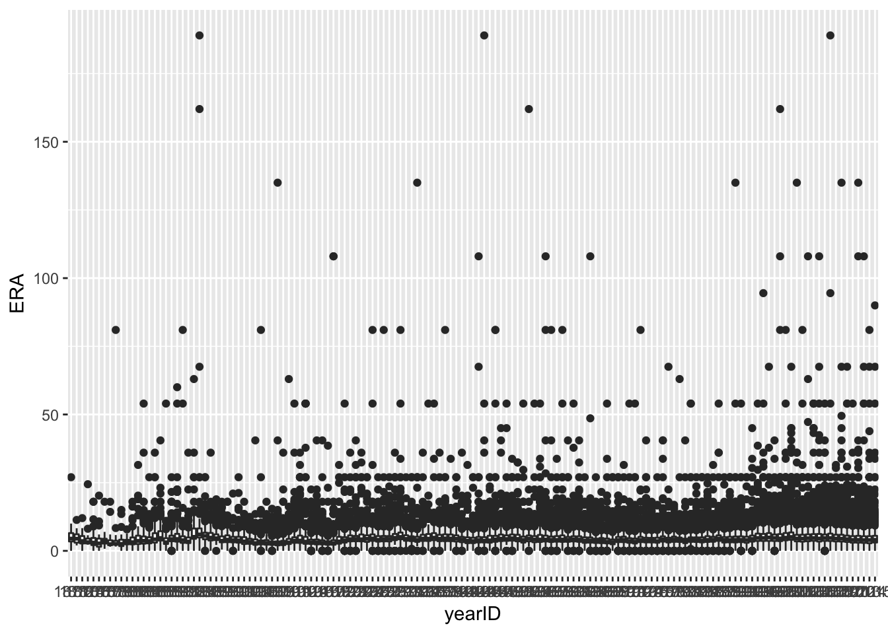
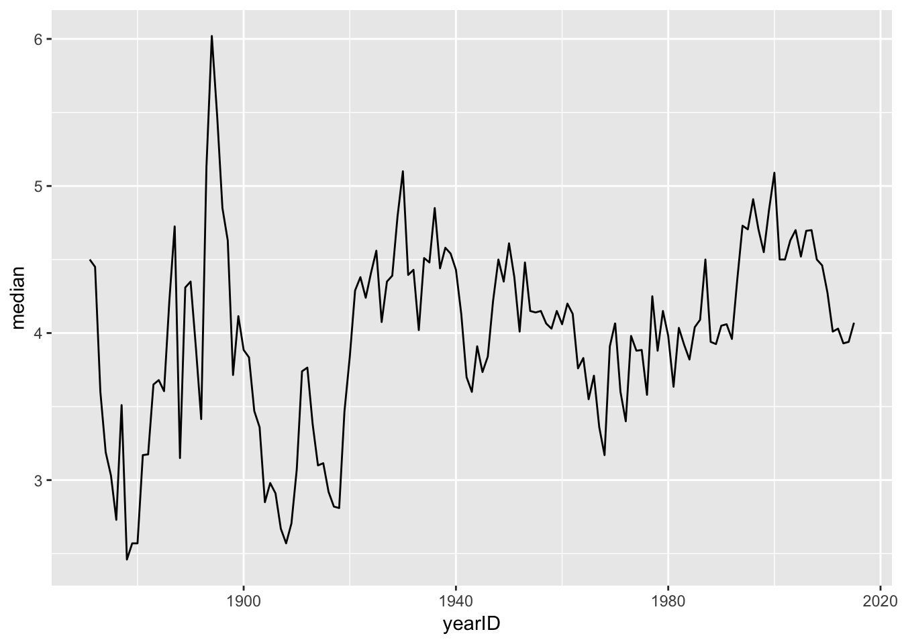
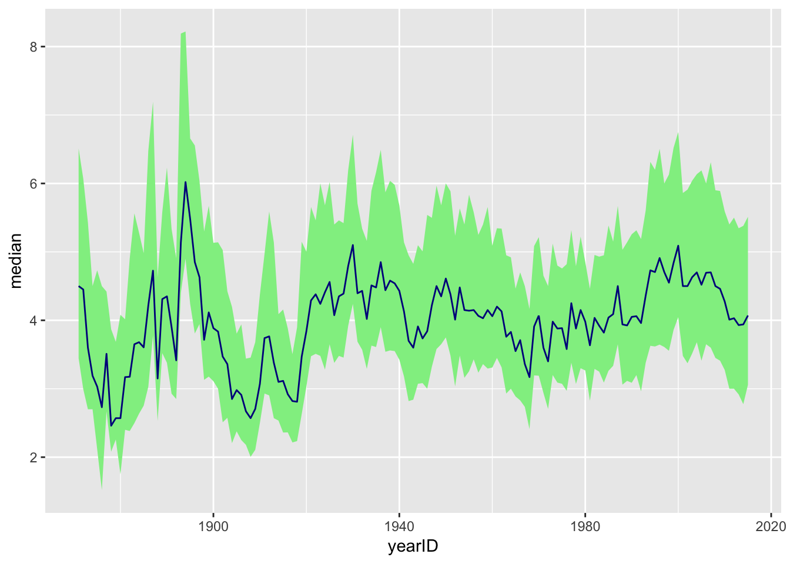
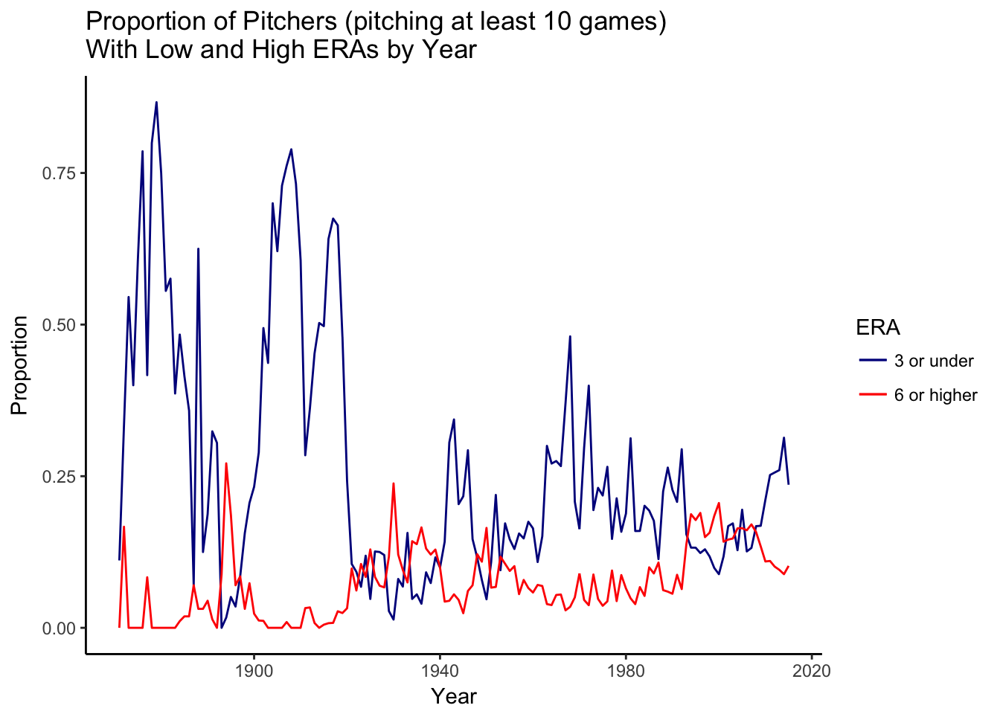
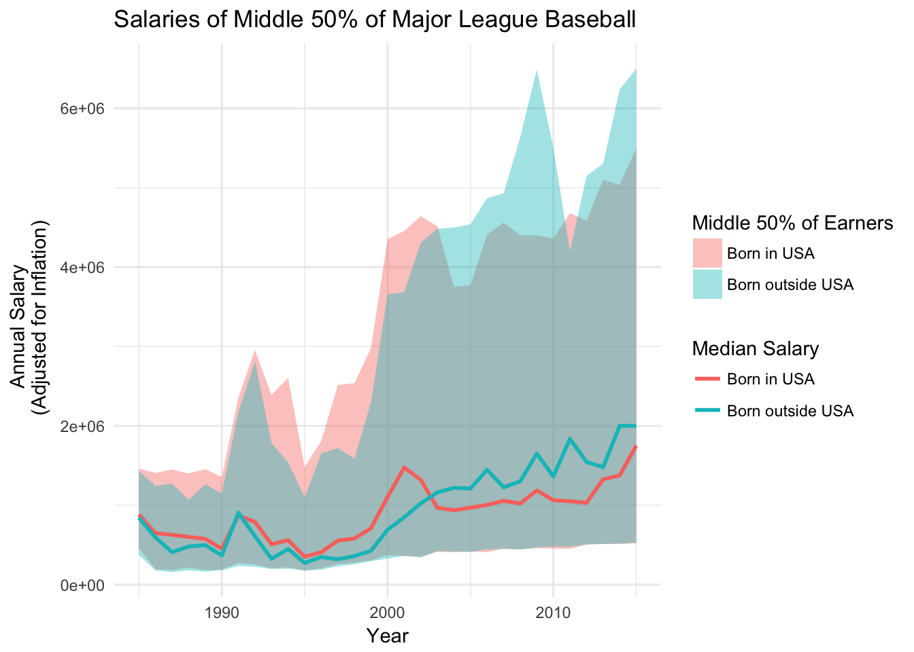

In this exercise I will generate five graphs displaying information from the Lahman Baseball Database. The data files used include:
Master.csv – contains information (such as date of birth, place of birth, height, weight, batting hand, throwing hand, full name, etc.) about each player, each player is given a unique playerID that is used to reference them in other data files; each row in this data file represents a single player and each player appears exactly once in this data file
Pitching.csv – contains information on the pitching records of individual players during individual season; each row in this data file represents the batting record of a player in a particular season and each player may appear several times if they played during multiple seasons (if a player switched teams during a season, that player will have multiple rows for that season, a separate record for their performance with each team)
Salaries.csv – contains salary information; players will appear multiple times if they played in multiple seasons
I will also use inflation data from Bureau of Labor Statistics’ Consumer Price Index Inflation Calculator. This information is contained in inflation.csv and the file contains two variables, the year and inflation2015. Inflation2015 gives the purchasing power of one dollar in year (for a year between 1980 and 2015) in terms of 2015 dollars.
library(tidyverse)
# library(formatR)
player_data <- read.csv("data/Master.csv")
pitching_data <- read.csv("data/Pitching.csv")
salary_data <- read.csv("data/Salaries.csv")
inflation_index <- read.csv("data/inflation.csv")This is a series of boxplots, one for each year, showing the distribution of ERAs.
class(pitching_data$yearID)[1] "integer"pitching_data$yearID <- as.factor(pitching_data$yearID)
class(pitching_data$yearID)[1] "factor"ggplot(data = subset(pitching_data, !is.na(ERA))) + geom_boxplot(aes(x = yearID,
y = ERA))
This grpah shows how the median ERA has changed over time.
pitching_data$yearID <- as.numeric(as.character(pitching_data$yearID))
summary_era <- summarize(group_by(pitching_data, yearID), Q1 = quantile(ERA,
0.25, na.rm = T), median = median(ERA, na.rm = T), Q3 = quantile(ERA, 0.75,
na.rm = T), min = min(ERA, na.rm = T), max = max(ERA, na.rm = T))
ggplot(summary_era) + geom_line(aes(x = yearID, y = median))
Banded ERA
ggplot(summary_era) + geom_ribbon(aes(x = yearID, ymin = Q1, ymax = Q3), fill = "lightgreen") +
geom_line(aes(x = yearID, y = median), color = "darkblue")
pitching_data_filtered <- filter(pitching_data, G >= 10)
summary_era_2 <- summarize(group_by(pitching_data_filtered, yearID), median = median(ERA,
na.rm = T), count = n(), unique_count = n_distinct(playerID), era_low_proportion = mean(ERA <=
3, na.rm = T), era_high_proportion = mean(ERA >= 6, na.rm = T))
ggplot(summary_era_2) + geom_line(aes(x = yearID, y = era_low_proportion, color = "3 or under")) +
geom_line(aes(x = yearID, y = era_high_proportion, color = "6 or higher")) +
labs(title = "Proportion of Pitchers (pitching at least 10 games)\nWith Low and High ERAs by Year",
y = "Proportion", x = "Year") + scale_color_manual(name = "ERA", values = c(`3 or under` = "darkblue",
`6 or higher` = "red")) + theme_classic()
